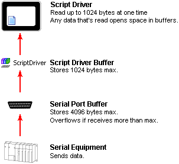

|
|
|
|
|
|
|
|
When using the script driver to read data from other equipment, you can specify the number of bytes to read, up to a maximum of 1024. The maximum is 1024 because the script driver buffer holds only 1024 bytes.
To read more than 1024 bytes of data, you need to run multiple read operations.


There are two buffers involved with script driver communications: the script driver buffer and the serial port buffer. The serial port buffer holds a maximum 4096 bytes. If the equipment sends more than 4096 bytes of data and you don't read it, then the serial port buffer will overflow and data will be lost.
The maximum amount of data you can write at one time is 1024 bytes.
When you want to read data from equipment you usually need to send a request. Do so by using the write method. After sending out the request, there is a delay before the equipment sends a response. To read the data sent by the equipment, your script must include a timeout to take into account this delay.
See the example below.
ScriptDriver.write(true, 8, SendPacket);
ScriptDriver.read(100, 7, RecvPacket); //100ms Timeout
After sending the write command, the script immediately runs the read command. However, at this point the equipment has not responded, and the read command waits for data.
When finally the data is received, the read command completes and continues with the rest of the script.
If no data is received, the read command waits for the timeout to elapse before continuing with the rest of the script. During this wait period (timeout), the script blocks other operations from running.
In most instances, when operations are normal, the timeout will not affect your application. In normal operations the equipment sends responses quickly, usually within 100ms for most applications that work with small amounts of data (100 bytes or less). The timeout comes into play in abnormal operations, such as when the equipment has failed, and there is no data to read on the serial port.
For the duration of the timeout, the script blocks other operations of the same type from running. The consequences of blocking are different from one type of script to another.
The following describes unwanted consequences that occur for various types of scripts that use a timeout and while there is no data to read from the serial port. Use the timeout in a controlled manner, limit its use, and fully test operations at runtime.
Conditional Actions or Panel scripts can cause the panel to appear frozen. Using a timeout with this type of script stops communication, stops updating variable values, and stops drawing and animation.
Panel On Open/On Close scripts produce the same problem as conditional scripts.
Alarm scripts produce the same problem as conditional actions or panel scripts.
Touch scripts (Action: Trigger = When Touch Panel, Switch script, Touch animation script, Function Key script, Alarm Touch Action script) stop running touch operations for the duration of the timeout. Touch operations are stored in a queue which can hold up to fifty touches. Once the timeout elapses, these queued touch operations are run. Other operations such as communication and drawing are not affected.

Using long timeouts could be dangerous as the panel operator cannot respond to alarms and other events during the timeout.
The recommended maximum timeout is one second (1000 ms).
You can use timeouts with Event On Startup Actions and Periodic Actions with a unique Frequency. There are side-effects to using a timeout with these actions, but the impact may be minimal, depending on your runtime requirements.
Event On Startup Actions increase the time required to boot and start the runtime application on the target machine and delay communications with equipment for the duration of the timeout. If a delay during startup does not adversely affect operations, then you can use the timeout.
Periodic Actions or Panel Scripts block other periodic action or panel scripts set up with the same frequency. If you use a unique value for the frequency, this effect can become negligible. However, if you use unique values, this can create a bigger load on the runtime as more threads are created. Balance your needs for unique strings with the runtime load capacity.
When you use the write method to send large amounts of data, all operations on the target machine are blocked until the write operation is complete.
To minimize the impact of write operations, we recommend splitting data into smaller chunks, such as 100 bytes, for each write operation.

The script driver's write method blocks ALL operations on the target machine until the write operation is complete. Try to set up applications so you don't have to write large amounts of data at one time.
When writing the maximum 1024 bytes with a transmission speed of 19200 bps, the target machine ceases to respond for 2 to 3 seconds.
Testing the user application before putting it into production is part of any development cycle. However, please pay extra attention to any script driver applications you create.